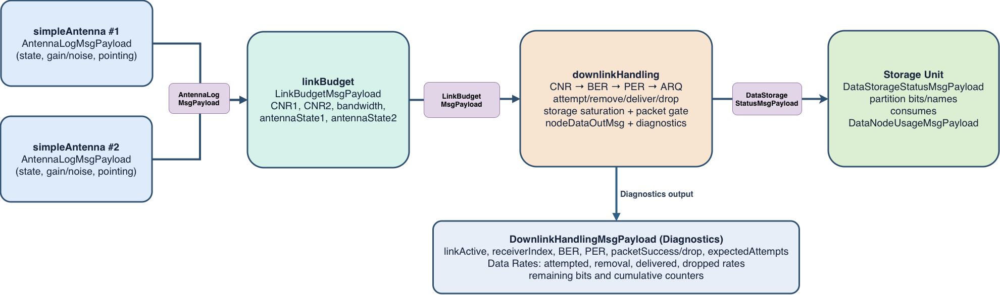
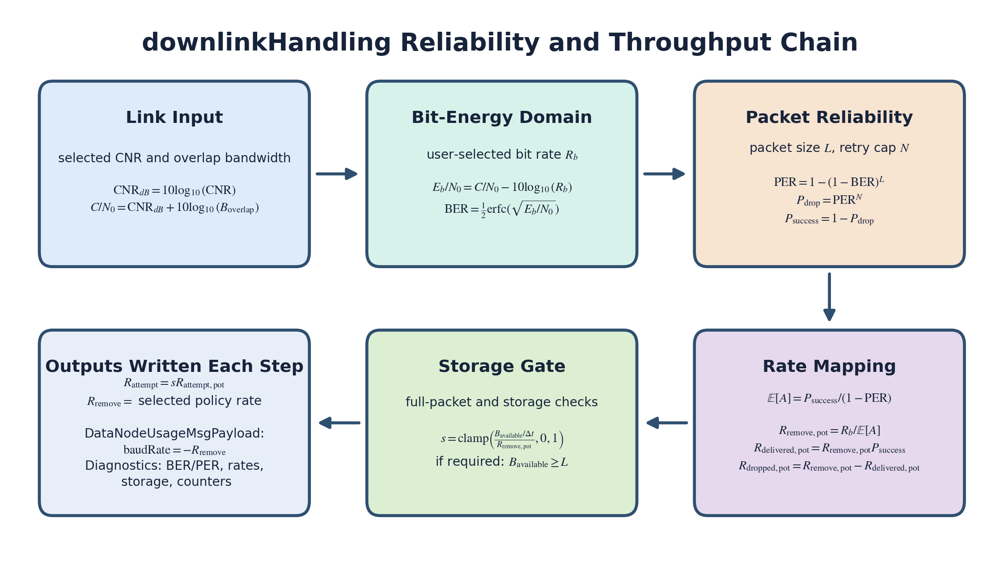

C++ Module: downlinkHandling
Warning
[BETA] downlinkHandling is a beta module in an initial public release. This module might be subject to changes in future releases.
Executive Summary
This document describes how the downlinkHandling module maps radio link quality into realistic data transfer outcomes.
At each simulation step, the module:
reads link quality from C++ Module: linkBudget
converts CNR into BER and packet error rate
applies retry-limited ARQ reliability
removes data from onboard storage at the resulting effective rate when storage routing is safely actionable
publishes detailed diagnostics for analysis and fault studies
The module is designed to sit between RF-link modeling (C++ Module: simpleAntenna, C++ Module: linkBudget) and onboard data-buffer dynamics (DataStorageStatusMsgPayload, DataNodeUsageMsgPayload).
System Role and Data Flow
{kind=link}

Figure 1: Integration flow and message-level role of downlinkHandling.
Message Connection Descriptions
The following table lists all module input and output messages. The message connection is set by the user from Python.
Msg Variable Name |
Msg Type |
Description |
|---|---|---|
linkBudgetInMsg |
Link-quality input from C++ Module: linkBudget (receiver states, |
|
storageUnitInMsgs |
Storage state input (partition names, partition bits, total storage level). Required for actual data removal; actual removal is currently limited to a single linked storage unit. Connected via |
|
nodeDataOutMsg |
Data-node output inherited from |
|
downlinkOutMsg |
Diagnostics output with link metrics, reliability metrics, rates, and cumulative counters. |
Detailed Module Description
The module extends DataNodeBase and runs once per simulation step.
The per-step sequence is:
Read
LinkBudgetMsgPayloadand all connected storage status messages.Select one candidate storage target (largest finite partition across all connected storage status messages; use
storageLevelonly when a message has no partition vector).Select receiver path (forced receiver index or auto mode).
Convert selected CNR and overlap bandwidth into \(C/N_0\).
Convert \(C/N_0\) and requested bit rate into \(E_b/N_0\).
Compute BER and PER.
Apply retry-limited ARQ model to obtain success/drop probability and expected attempts.
Compute attempted, removed, delivered, and dropped rates.
Apply packet gating and storage saturation.
Write
nodeDataOutMsganddownlinkOutMsg.
The candidate-selection logic can inspect multiple storage status messages, but actual storage removal is intentionally conservative:
nodeDataOutMsg carries only dataName and baudRate, so it cannot safely target one specific storage unit when multiple
storage units are linked. In that case, downlinkHandling reports the selected candidate in diagnostics but forces removal to zero
for that step to avoid silent cross-unit corruption.
Configurable Parameters
Parameter |
Default |
Unit |
Description |
|---|---|---|---|
|
0.0 |
bit/s |
Requested raw channel bit rate \(R_b\). If \(R_b \le 0\), throughput is zero. |
|
256 |
bit |
Packet length \(L\) for BER-to-PER conversion. |
|
10 |
Retry cap used in the ARQ model. Current implementation enforces \(N \ge 1\) and treats \(N\) as maximum transmission attempts. |
|
|
0 |
Receiver selection: 0=auto, 1=use receiver path 1, 2=use receiver path 2. |
|
|
|
Storage removal mode: |
|
|
|
If |
Configuration Interface and Validation
The module exposes validated setters in C++/Python:
setBitRateRequest(bitRateRequest)with \(bitRateRequest \ge 0\)setPacketSizeBits(packetSizeBits)with \(packetSizeBits > 0\)setMaxRetransmissions(maxRetransmissions)with \(maxRetransmissions \ge 1\)setReceiverAntenna(receiverAntenna)withreceiverAntenna in {0,1,2}setRemovalPolicy(removalPolicy)withremovalPolicy in {0,1}setRequireFullPacket(requireFullPacket)
If a setter receives an invalid value, the module rejects it and keeps the last valid value. Use the explicit setter/getter methods in Python to keep the interface consistent with the C++ API.
Receiver Selection and CNR1/CNR2 Usage
The module uses receiver-specific fields from LinkBudgetMsgPayload:
CNR1corresponds to receiver path 1CNR2corresponds to receiver path 2
These are not duplicates. They represent two possible receiving directions/modes in the bidirectional link-budget result.
Selection behavior:
receiverAntenna = 1: use path 1 (only if antenna state 1 is RX or RXTX)receiverAntenna = 2: use path 2 (only if antenna state 2 is RX or RXTX)receiverAntenna = 0: auto-select valid RX path with higher CNR
If no valid receiver path exists, the link is treated as inactive for that step.
Reliability and Throughput Model
{kind=link}

Figure 2: Computation chain from RF link quality to storage removal and delivered data rates.
For valid inputs (linked/written link budget, selected CNR \(>0\), overlap bandwidth \(>0\), \(R_b>0\), packet size \(>0\)):
Current BER model (BPSK over AWGN):
Packet error model (independent bit errors, any bit error fails packet):
Let \(N=\max(1,\texttt{maxRetransmissions})\). Retry-limited ARQ model:
Expected attempts per source packet (truncated geometric expectation):
Unscaled rates:
Storage and packet gating scale factor:
with additional logic:
if
requireFullPacketisTrue, enforce \(B_{\mathrm{available}} \ge L\)if \(\Delta t \le 0\) or \(R_{\mathrm{remove,pot}} \le 0\), set \(s=0\)
Final rates:
Actual storage removal follows removalPolicy:
The value written to storage through nodeDataOutMsg is then:
Output Diagnostics
The custom output DownlinkHandlingMsgPayload reports:
link/selection state (
linkActive,receiverIndex, antenna names,removalPolicy)physical-layer quality terms (CNR, \(C/N_0\), \(E_b/N_0\), BER, PER)
ARQ reliability terms (success/drop probabilities, expected attempts)
rate terms (attempted, removed, delivered, dropped)
storage terms (available and estimated remaining bits)
cumulative counters (attempted/removed/delivered/dropped bits)
Integration with simpleAntenna and linkBudget
Typical chain:
C++ Module: simpleAntenna modules compute antenna logs.
C++ Module: linkBudget computes overlap bandwidth and CNR per receiver path.
C++ Module: downlinkHandling converts link quality to effective data transfer and storage removal.
Storage modules consume
nodeDataOutMsgand reduce onboard buffered data.
Warning
Also important integration note:
Do not run spaceToGroundTransmitter and downlinkHandling as competing downlink removers
on the same storage partitions. Pick one downlink path.
This separation is useful for fault modeling: upstream RF degradation (pointing, frequency mismatch, atmospheric attenuation, receive-state changes) naturally propagates into BER/PER and delivered data.
Assumptions and Current Limits
BER model is analytic BPSK/AWGN.
Bit errors are independent.
Any bit error fails the packet.
ARQ is expectation-based, not packet-by-packet Monte Carlo.
No explicit ACK latency, coding gain, framing overhead, or adaptive coding/modulation.
REMOVE_DELIVERED_ONLYpreserves dropped/undelivered bits onboard, but the module still uses an expected-rate ARQ model instead of explicit packet ACK/NACK timelines.Storage target selection prioritizes per-partition values.
storageLevelis only used as fallback for messages that do not providestoredDataentries.nodeDataOutMsgidentifies storage bydataNameonly and cannot address a specific storage unit. Accordingly, downlinkHandling forces removal to zero whenever more than one storage unit is linked throughaddStorageUnitToDownlink. Multi-storage status inspection is still supported for diagnostics and candidate selection, but actual removal currently requires a single linked storage unit.If a selected storage status message does not provide an explicit partition name, downlinkHandling also forces removal to zero for that step and emits an empty
nodeDataOutMsg.dataNamerather than emitting an aggregate negative rate that downstream storage cannot route safely.
Unit Test Coverage
Test file:
src/simulation/communication/downlinkHandling/_UnitTest/test_downlinkHandling.py
The tests verify:
equation parity versus a Python-equivalent BER/PER/ARQ model
zero-flow behavior for invalid link inputs
retry-cap effects on drop probability and removal/delivery behavior
removal-policy behavior (
REMOVE_ATTEMPTEDvsREMOVE_DELIVERED_ONLY)storage-limited rate capping and drain behavior
automatic receiver selection from antenna RX states and CNR values
duplicate-storage input rejection
storage-target selection across multiple storage status messages
conservative removal blocking when more than one storage unit is linked
conservative removal blocking when a selected partition has no explicit name
ambiguous duplicate partition-name behavior across multiple storage status messages
User Guide
Basic setup example:
from Basilisk.simulation import downlinkHandling, simpleStorageUnit
dlh = downlinkHandling.DownlinkHandling()
dlh.setBitRateRequest(1.0e5) # [bit/s]
dlh.setPacketSizeBits(1024) # [bit]
dlh.setMaxRetransmissions(8) # [-]
dlh.setReceiverAntenna(0) # [-] auto-select valid RX path with highest CNR
dlh.setRemovalPolicy(0) # [-] 0=REMOVE_ATTEMPTED, 1=REMOVE_DELIVERED_ONLY
dlh.setRequireFullPacket(True) # [-]
storage = simpleStorageUnit.SimpleStorageUnit()
storage.storageCapacity = int(8e9)
storage.addDataNodeToModel(dlh.nodeDataOutMsg)
dlh.addStorageUnitToDownlink(storage.storageUnitDataOutMsg)
# linkBudgetOutPayload is produced by the linkBudget module:
# dlh.linkBudgetInMsg.subscribeTo(linkBudgetModule.linkBudgetOutPayload)
-
class DownlinkHandling : public DataNodeBase
- #include <downlinkHandling.h>
Downlink data-handling model that maps link quality to reliable throughput.
Public Types
-
enum class RemovalPolicy : uint32_t
Storage removal policy selector.
REMOVE_ATTEMPTEDremoves both delivered and drop-limited data from storage.REMOVE_DELIVERED_ONLYremoves only successfully delivered data.Values:
-
enumerator REMOVE_ATTEMPTED
[-] Remove delivered + drop-limited bits (current default behavior)
-
enumerator REMOVE_DELIVERED_ONLY
[-] Remove only successfully delivered bits
-
enumerator REMOVE_ATTEMPTED
Public Functions
-
DownlinkHandling()
Construct the downlink handling module with default parameters.
Constructor
-
~DownlinkHandling() = default
Default destructor.
-
bool addStorageUnitToDownlink(Message<DataStorageStatusMsgPayload> *tmpStorageUnitMsg)
Register a storage-status input message.
Duplicate and null pointers are rejected.
Add a storage-status message to the module input list
- Parameters:
tmpStorageUnitMsg – Pointer to a storage status output message
- Returns:
trueif the message was added,falseotherwise
-
bool setBitRateRequest(double bitRateRequest)
Set requested raw channel bit rate.
Set requested raw bit rate [bit/s]
- Parameters:
bitRateRequest – Requested bit rate [bit/s], must be finite and :math:
\ge 0- Returns:
trueif accepted,falseotherwise
-
bool setPacketSizeBits(double packetSizeBits)
Set packet size used by BER-to-PER conversion.
Set packet size used for BER-to-PER conversion [bit]
- Parameters:
packetSizeBits – Packet size [bit], must be finite and :math:
> 0- Returns:
trueif accepted,falseotherwise
-
bool setMaxRetransmissions(int64_t maxRetransmissions)
Set retry cap used by the ARQ model.
Set retry-cap used by the ARQ expectation model [-]
- Parameters:
maxRetransmissions – Maximum packet transmission attempts, must be :math:
\ge 1- Returns:
trueif accepted,falseotherwise
-
bool setReceiverAntenna(int64_t receiverAntenna)
Select receiver path mode.
Set receiver-selection mode: 0=auto, 1=path1, 2=path2 [-]
- Parameters:
receiverAntenna –
0= auto,1= force path 1,2= force path 2- Returns:
trueif accepted,falseotherwise
-
bool setRemovalPolicy(int64_t removalPolicy)
Set storage-removal policy.
Set storage-removal policy: 0=remove attempted, 1=remove delivered only
- Parameters:
removalPolicy –
0= remove attempted,1= remove delivered only- Returns:
trueif accepted,falseotherwise
-
void setRequireFullPacket(bool requireFullPacket)
Set packet gating behavior.
Set packet-gating behavior flag
- Parameters:
requireFullPacket – If
true, require at least one full packet before downlink
-
inline double getBitRateRequest() const
Get requested raw channel bit rate.
- Returns:
Requested bit rate [bit/s]
-
inline double getPacketSizeBits() const
Get configured packet size.
- Returns:
Packet size [bit]
-
inline uint64_t getMaxRetransmissions() const
Get retry cap used by ARQ model.
- Returns:
Maximum transmission attempts per packet [-]
-
inline int64_t getReceiverAntenna() const
Get receiver selection mode.
- Returns:
0(auto),1(path 1), or2(path 2)
-
inline uint32_t getRemovalPolicy() const
Get storage-removal policy.
- Returns:
0(remove attempted) or1(remove delivered only)
-
inline bool getRequireFullPacket() const
Get packet gating mode.
- Returns:
trueif one full packet is required before downlink
-
inline uint32_t getCurrentLinkActive() const
Return 1 if link-quality inputs were valid on the last update, else 0.
-
inline uint32_t getCurrentReceiverIndex() const
Return selected receiver index on the last update (0=no receiver, 1/2=receiver path).
-
inline double getCurrentTimeStep() const
Return last module time step [s].
-
inline double getCurrentBer() const
Return last computed bit-error-rate (BER) [-].
-
inline double getCurrentPer() const
Return last computed packet-error-rate (PER) [-].
-
inline double getCurrentPacketDropProb() const
Return last packet drop probability within retry cap [-].
-
inline double getCurrentExpectedAttemptsPerPacket() const
Return last expected attempts per packet under retry cap [-].
-
inline double getCurrentStorageRemovalRate() const
Return last data-removal rate from storage [bit/s].
-
inline double getCurrentDeliveredDataRate() const
Return last successfully delivered data rate [bit/s].
-
inline double getCurrentDroppedDataRate() const
Return last dropped data rate after retries [bit/s].
-
inline double getCurrentEstimatedRemainingDataBits() const
Return estimated remaining bits in selected data partition [bit].
Public Members
-
ReadFunctor<LinkBudgetMsgPayload> linkBudgetInMsg
Link-budget input message.
-
Message<DownlinkHandlingMsgPayload> downlinkOutMsg
Downlink performance output message.
-
BSKLogger bskLogger
BSK logging interface.
Private Functions
-
bool customReadMessages() override
Read custom input messages
-
void customWriteMessages(uint64_t CurrentClock) override
Write custom output messages
-
void customReset(uint64_t CurrentClock) override
Module reset hook
-
void evaluateDataModel(DataNodeUsageMsgPayload *dataUsageMsg, double currentTime) override
Core data-model evaluation
-
StorageSelection selectStorageSelection() const
Select storage target with the largest finite data across linked units.
The function prioritizes per-partition values when available and only falls back to aggregate
storageLevelfor messages that provide no partition vector.
-
bool isStorageRemovalRouteSafe(const StorageSelection &selection) const
Return true only when the selected storage route can be safely acted on via DataNodeUsageMsgPayload
-
bool setDataNameFromStorageSelection(const StorageSelection &selection, char *buffer, std::size_t bufferSize)
Set data name based on selected storage unit and partition
-
void selectReceiver(double *cnrLinear, uint32_t *receiverIndex) const
Select receiver CNR from link budget payload
-
bool validateConfiguration() const
Validate module configuration values
-
bool isFinite(double value) const
Return true if
valueis finite
-
bool isFiniteNonNegative(double value) const
Return true if
valueis finite and >= 0
-
bool isFinitePositive(double value) const
Return true if
valueis finite and > 0
-
bool isReceiverState(uint32_t state) const
Check if antenna state allows receiving
-
double computeBerFromEbN0dB(double ebN0_dB) const
Compute BER for BPSK over AWGN from Eb/N0 [dB]
-
double clampProbability(double value) const
Clamp probabilities to [0, 1]
-
double sanitizeNonNegative(double value) const
Clamp all invalid/non-physical nonnegative outputs to 0
Private Members
-
double bitRateRequest
[bit/s] Raw requested channel bit-rate
-
double packetSizeBits
[bit] Packet size for BER-to-PER conversion
-
uint64_t maxRetransmissions
[-] Maximum transmission attempts per packet in the ARQ model
-
int64_t receiverAntenna
[-] 0=auto, 1=receiver antenna 1, 2=receiver antenna 2
-
RemovalPolicy removalPolicy
[-] Storage-removal mode for downlinked data
-
bool requireFullPacket
[-] If true, wait for >=1 full packet before downlinking
-
std::vector<Message<DataStorageStatusMsgPayload>*> storageUnitMsgPtrs
Storage-msg pointer list for duplicate checks.
-
std::vector<ReadFunctor<DataStorageStatusMsgPayload>> storageUnitInMsgs
Storage status subscribers.
-
std::vector<DataStorageStatusMsgPayload> storageUnitMsgsBuffer
Local storage status buffers.
-
LinkBudgetMsgPayload linkBudgetBuffer
Local copy of link-budget message.
-
bool linkBudgetValid
True when linkBudget message is linked and written.
-
DownlinkHandlingMsgPayload downlinkOutBuffer
Local copy of downlink output message.
-
double previousTime
[s] previous simulation time
-
double currentTimeStep
[s] current integration step
-
double availableDataBits
[bit] selected storage data available
-
double cumulativeAttemptedBits
[bit] attempted channel bits (includes retransmissions)
-
double cumulativeRemovedBits
[bit] bits removed from storage
-
double cumulativeDeliveredBits
[bit] successfully delivered bits
-
double cumulativeDroppedBits
[bit] dropped bits after retransmission limit
-
std::string lastBlockedStorageRemovalReason
[-] last routing warning reason emitted for blocked removal
-
struct StorageSelection
-
enum class RemovalPolicy : uint32_t